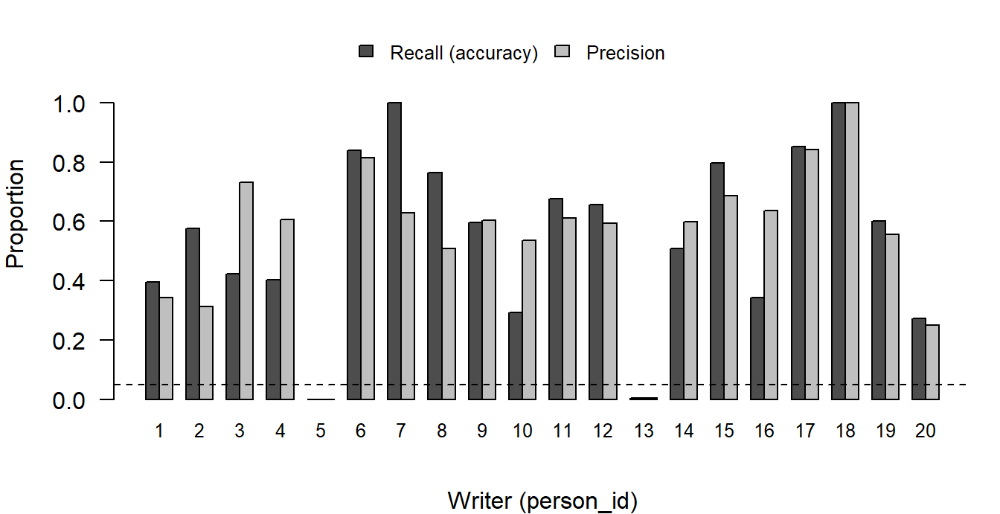

| Setting | Default | Tuned |
|---|---|---|
| Activation | ReLU | tanh |
| Dropout rate | 0.2 | 0.7 |
| Learning rate | 0.01 | 0.0001 |
| L2 penalty | none | 0.1 |
| Filters per layer | 16 | 16 |
| Kernel size | 3 x 3 | 3 x 3 |
| Pool size | 2 x 2 | 2 x 2 |
| Epochs | 10 | 10 |
Convolutional Neural Network
Data Science for Industry
1 Methods
A convolutional neural network (CNN) was built to answer the first research question: can a writer be identified from a single handwritten digit? Each image is assigned to one of the 20 writers, whatever digit it shows, so the digit is neither an input nor a label. The network outputs one probability per writer (a softmax layer) and the predicted writer is the one with the highest probability. Pixel values were divided by 255, and the training, validation and test sessions are those described under Data Splitting. Training used categorical cross-entropy loss, the Adam optimiser and batches of 64 images.
The network has two convolutional layers (16 filters of 3 \(\times\) 3 each, followed by an activation function), dropout after the first convolutional layer, 2 \(\times\) 2 max pooling, a flatten layer and a 20-unit softmax output layer. This gives 48,580 trainable parameters, 95% of them in the output layer. When an L2 penalty is used, it is applied to the weights of both convolutional layers and the output layer.
Three other models give context for the results. The default CNN has the same architecture with the settings of the course example (ReLU, dropout 0.2, learning rate 0.01, no penalty). The nearest-centroid classifier averages each writer’s training images of a digit into a template and assigns a new image to the writer whose template for that digit is closest. The linear model is a softmax regression on the 784 pixels, with no hidden layer. The linear model’s learning rate and number of epochs were set from its own validation curves, so it is lightly tuned.
All settings of the final CNN were chosen on the validation session only (session 4), in four stages, with three random seeds per candidate:
- activation function (tanh or ReLU), learning rate (0.003 down to 0.00001) and dropout rate (0.1 to 0.7): 72 combinations, ranked on validation accuracy and on validation cross-entropy, with the two ranks added;
- number of filters (8, 16 or 32), kernel size (3 or 5) and pool size (2 or 3): 12 combinations, choosing the highest accuracy among those whose cross-entropy was within 30% of the best;
- number of epochs, from the validation curves, with the same 30% rule;
- the L2 penalty \(\nu\), over eight values from 0 to 0.3, using the value after the one with the lowest cross-entropy, which favours the simpler model.
Cross-entropy was computed from the predicted probabilities without the penalty term, so it can be compared across penalties. Accuracy and cross-entropy preferred different settings in the first stage, and the rank rule was chosen after seeing that, so it is partly a judgement.
The final model was fixed before the test session (session 5) was scored. Performance is reported as accuracy, cross-entropy, and per-writer recall and precision. Every writer has 250 test images, so accuracy equals the average per-writer recall (balanced accuracy). The 50 replicates of a digit by one writer in one session are near-duplicates, so the effective sample is about 100 writer-digit cells per session and not 5,000 images, and intervals were obtained by resampling writers.
2 Results
The first stage favoured tanh with a learning rate of 0.0001 and dropout 0.7 (validation accuracy 59.1% and cross-entropy 1.89, averaged over three seeds). A smaller learning rate (0.00003) gave a lower cross-entropy (about 1.5) but a lower accuracy (about 56%), and dropout rates between 0.5 and 0.7 could not be told apart. In the second stage, the default layout (16 filters of 3 \(\times\) 3, 2 \(\times\) 2 pooling) had the highest validation accuracy among the architectures inside the cross-entropy tolerance, so it was kept. Validation cross-entropy was lowest after 4 epochs and rose afterwards, while training accuracy approached 100%; 10 epochs was chosen as the point of highest accuracy among the epochs inside the tolerance. The penalty has a U-shaped effect (Table 2): cross-entropy fell from 1.89 without a penalty to 1.39 at \(\nu = 0.03\) and rose again, and at \(\nu = 0.3\) the model could not learn. The value used was \(\nu = 0.1\). Table 1 lists the final settings.
| \(\nu\) | Training accuracy | Validation accuracy | Validation cross-entropy |
|---|---|---|---|
| 0 | 0.979 | 0.591 | 1.892 |
| 0.003 | 0.979 | 0.593 | 1.727 |
| 0.01 | 0.975 | 0.600 | 1.529 |
| 0.03 | 0.957 | 0.606 | 1.392 |
| 0.1 | 0.862 | 0.612 | 1.447 |
| 0.3 | 0.165 | 0.135 | 2.986 |
On the validation session, the default CNN reached a training accuracy of 99.4% and a validation accuracy of 44.8%, a gap of 55 points: it memorises the training sessions. The tuned CNN reached 86.0% and 60.4%, a gap of 26 points. The two models have the same architecture, so the improvement comes from the four changed settings together (activation, dropout, learning rate and penalty). The validation score of the tuned CNN is optimistic, because its settings were selected on this session.
On the held-out session, the tuned CNN identified the writer for 55.0% of the images, against 5% expected by chance with 20 writers (Table 3). A 95% interval obtained by resampling writers is 42.7% to 67.1%. The accuracy is lower than the validation accuracy (60.4%), as expected when settings are chosen on the validation session.
| Model | Accuracy (%) | Cross-entropy |
|---|---|---|
| Nearest centroid | 47.3 | - |
| Linear softmax | 43.6 | - |
| Default CNN | 49.3 | 5.87 |
| Tuned CNN (final model) | 55.0 | 1.39 |
| Guessing evenly among 20 writers | 5.0 | 3.00 |
Because all models are scored on the same 20 writers, they were compared in pairs, resampling writers. The tuned CNN scored 11.4 percentage points higher than the linear model (95% interval 4.1 to 18.9), so that difference is unlikely to be due to which writers were sampled. Its 5.7-point lead over the default CNN (interval \(-1.9\) to 13.6) cannot be distinguished from zero, and the nearest-centroid classifier was not tested formally. The clearest difference between the two CNNs is in the probabilities: the tuned model’s cross-entropy of 1.39 is below the 3.00 of guessing evenly, whereas the default CNN’s 5.87 is about twice that value. The default model is overconfident: it is wrong about half the time, but gives high probability to its wrong answers. The linear baseline was only lightly tuned, so part of its deficit reflects tuning effort and not the convolutional structure.
Accuracy varied enormously between writers (Figure 1). Writers 7 and 18 were identified in every image, and writers 6, 8, 15 and 17 in 76% to 85% of their images, whereas writer 5 was never identified, writer 13 in only 1 of 250 images, and writers 10, 16 and 20 in fewer than 35%. The average per-writer precision was 54.3%. Writers 5 and 13 were also the hardest for a model with different settings, which suggests that the difficulty comes from the data and not from one model.

The errors are concentrated in particular pairs of writers, not spread evenly. Seventy-one per cent of writer 10’s images (177) were labelled as writer 2, 60% of writer 5’s (150) as writer 13, and 40% of writer 16’s (100) as writer 1. Some confusions run in both directions (writers 1 and 16, 14 and 15, and 6 and 17), which may mean that the two writers’ handwriting is similar, although this was not checked. The model also over-assigns a few writers: writer 2 received 459 predictions, of which only 144 (31%) were correct, and writer 7 received 398 (63% correct), against a fair share of 250. Many counts are close to 50, 100 or 150, the size of one or more writer-digit cells of near-identical images, so the model tends to assign a whole cell to a single writer. Accuracy was similar for all five digits (50% to 59%), with no digit clearly easier.
These results agree with the exploratory analysis. Writers differ in measurable ways, but a writer’s average digit in another session was only about 20% closer to their own earlier sessions than to another writer’s handwriting (distance ratio about 0.8), so a new session often resembles another writer’s training data.
There are a few limitations. Validation and test scores rest on about 100 writer-digit cells each, so differences of a few points between models are within noise. The settings were chosen in stages, which ignores interactions between them, and every stage is another look at the validation session, so the validation scores of the tuned CNN are optimistic. The comparisons between models rest on one training run per model: the intervals reflect which writers were sampled, not variation between random starts. The baselines received less tuning than the CNN. Finally, a test result from an earlier configuration was seen before the tuning was redone, and no setting was chosen using the test session.